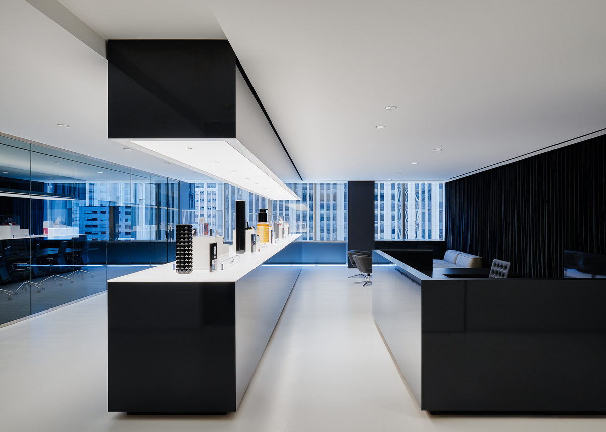

Kendo Brands
Kendo is LVMH's brand incubator — the house behind Fenty Beauty, Ole Henriksen, and KVD Beauty. As a Supply Chain Data Analyst, I spent a summer inside one of the world's most powerful luxury conglomerates watching how a product actually gets made.
The work was technical: building data pipelines, tracking compliance, making the invisible infrastructure of beauty legible. But what stayed with me wasn't the code — it was what the data revealed about how the industry actually operates.
Chemical compliance isn't glamorous — but in global beauty, it's what determines whether a product can ship.
As products move from concept to formulation to manufacturing to retail, they have to meet regulatory standards across dozens of markets — each with different requirements. Tracking that manually doesn't scale. I built a data pipeline to automate the monitoring: ingesting supplier data, flagging non-compliance early, and giving the supply chain team clear visibility into where every product stood across the full regulatory landscape.
The goal was to surface problems before they became delays — and to replace a process that lived in spreadsheets with one that could actually keep up with the pace of a global launch calendar.

Behind every product launch is twelve to eighteen months of invisible work.
Lead times are longer than most people imagine. Every component — formula, packaging, labeling — moves through its own track of vendors, approvals, and logistics, all running in parallel. A delay in one thread can cascade through the whole system. The gap between a campaign image and a product on a shelf is enormous, and most of it is invisible to the consumer.
What surprised me most was the obsolescence. Products get discontinued. Formulas change. Forecasts miss. And when they do, inventory doesn't disappear — it sits, or gets written off. For brands built on desire and aspiration, there's a significant amount of waste built into the model.
That observation stayed with me. Sustainability isn't abstract to me — I've seen where the excess actually comes from, and I understand the structural reasons it exists. That's a different starting point than caring about it from the outside.
Working inside a luxury conglomerate changed how I read the industry. The aspiration is real. So is the infrastructure behind it — and the consequences of that infrastructure are part of the story too.